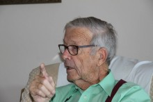

Please note: the AAS Obituaries are temporarily being hosted on this website while their full content is being ingested into the PubPub publishing platform newly adopted by the Bulletin of the American Astronomical Society. When the migration is complete, your existing links will take you to the final, migrated content. Contact peter.williams@aas.org with any questions.
Aden B. Meinel (1922-2011)

Aden Meinel was a versatile scientist who designed some of our fastest cameras, spectrographs, and telescopes. He worked in airglow and aurora, started the Kitt Peak National Observatory and the College of Optical Sciences at the University of Arizona, designed the first successful multi-mirror telescope, and designed space telescopes for JPL. He generously helped develop telescopes in other countries, such as LAMOST in China.
Aden was born in Pasadena, CA, on 25 November 1922. His father was a painter who painted the interior decorations in Caltech’s Athenaeum. Aden showed an early curiosity about science and technology. Initially he was interested in airplanes and helped test airplane designs and motions in the test tunnel at Pasadena Junior College (PJC), along with his older brother, Mark, who went on to a career at Lockheed.
As a student at PJC, Aden became enthralled with physics. His teacher obtained permission for Aden to read original copies of Newton’s books in the Rare Book Room at Huntington Library. He was especially thrilled to read Newton’s “Optics.” He became the laboratory assistant in physics and was recommended for a summer job at Caltech, which included helping Robert A. Millikan and William Pickering launch balloons from Caltech to measure cosmic rays. At PJC (later Pasadena City College) he met Marjorie Pettit, daughter of Edison Pettit, a Mt. Wilson Observatory solar astronomer. She later become his wife and lifetime collaborator for 60 years.
During WWII, Aden worked on Caltech’s rocket program, developing a multi-rocket launcher and teaching the Marines at Camp Pendleton how to launch rockets. He transferred to the Navy, and when the Navy’s expert on rockets died in a plane crash, Aden was asked to fly to Europe to learn, near the end of WWII, how the German V-2 rockets were made and worked. He went to Nordhausen and learned that the Germans were working on a two-stage rocket that could reach the U.S. In Toplitzsee in Austria, he saw their testing facilities for underwater rockets and learned that the tests had not been completed because the parts had been bombed in transit. He helped arrange for some of the German scientists to come to the U.S., rather than the Soviet Union. In Jena, he was the first scientist into the Zeiss optics factory and obtained filters for Walter Baade to use on Mt. Wilson to suppress the airglow.
After the war, Aden went to UC Berkeley for graduate work. He remembered from his summer work at Mt. Wilson that Baade’s studies of faint sources were hampered by airglow radiation. For his thesis he designed and built a spectrograph and f/1 camera to obtain spectra of the airglow. He resolved and identified airglow bands, such as the Meinel bands of OH. He also observed aurorae and demonstrated that they were produced by protons coming from the Sun. He became a key person in planning for the IGY, including a station at the South Pole.
At Yerkes, he was Associate Director under Strömgren, and started an optical shop and the design of large telescopes. He built a small f/1 camera that I used at McDonald Observatory to photograph the Gum Nebula in detail. That nebula was discovered by Australian Colin Gum and subtends 40° of the sky, but is too faint to see by eye.
In 1955 when the idea was proposed of a national observatory for all astronomers to use, the natural choice for Director was Aden because of his versatile abilities. He and I selected five potential sites in the southwest of the U.S. and they were tested. To determine transparency of the sky, he developed 16-inch telescopes in trailers to be used for photometry of stars. To determine seeing, he designed a telescope that looked at Polaris and let its light pass through a Ronchi screen, a glass plate with alternating dark and transparent lines, to a photomultiplier. The recording was done automatically: as Polaris moved around the pole, the saw-toothed pattern showed the quality of the seeing. The instruments were placed at the tops of tall triple towers to avoid ground heating.
Even before Kitt Peak was selected, Aden designed a unique 2.1-meter telescope. That size is too small for astronomers to work at the prime focus; therefore, he used an f/2.7 primary so that the Cassegrain focus would also be fast (f/8). The primary mirror was made with the “slumping” or “re-melting” process, which produced a uniform Pyrex honeycombed disk that was ground, polished, and figured in only 15 months.
The site survey led to the selection of Kitt Peak for the national observatory. Unfortunately, just before the dedication the President of the AURA Board, Robert McMath, learned that Aden was married to the daughter of Edison Pettit, with whom McMath had a feud, so the Board listened to trivial charges against Aden, namely a small budget overrun. Aden did not fight back but resigned the day before the dedication.
Aden went to the University of Arizona where he became Director of the Steward Observatory. He and Frank Low designed a multiple-mirror telescope, the first optical telescope of that kind and the predecessor of all the recent large telescopes. Aden had been at Corning and knew that they had six 1.8-meter blanks, which were used for the Multiple-Mirror Telescope on Mt. Hopkins.
Aden also started an Optical Science Center because there was only one other university (Univ. Rochester) in the country that granted Ph.D.’s in optics. The new center, now called the College of Optical Sciences, has the only two Nobel Prize winners in Arizona. The College went from four to 25 faculty members teaching 90 courses, and a student body of 100. It has 1500 graduates, and they started the optical industry in the Tucson area.
Along the way he and Marjorie explored solar energy, although the technology had not been developed enough to make it economical.
Then we went to JPL in 1982. I am here indebted to Jim Breckinridge, who was earlier a student of Aden’s but became an administrator at JPL and who employed Aden. Jim wrote to me “Aden Meinel was a great genius of the 20th century. Without his vision and drive, ground-based astronomy, space astronomy, and earth remote-sensing optical systems would have been much more primitive. As we all know, Aden had several careers. Each one he approached with the enthusiasm and energy of what we would call today a ‘game-changing” revolutionary genius. At the same time he and Marjorie were modest, unassuming, kind, and generous with their concepts and ideas, particularly with young engineers and scientists. Aden is recognized around JPL as a ‘true gentleman.’”
At JPL Aden, Marjorie, and Jim worked on a NASA study of the Large Deployable Reflector, which started out as a 20 to 50 meter diameter sub-millimeter telescope to operate at the ambient temperature of space. They shared the vision of an infrared/visible telescope. They showed in published studies that a segmented telescope could be built in space. This work laid the foundation for the James Webb Space Telescope. One of those papers won the SPIE Kingslake Award for the most articulate and best written paper of 1994.
At one stage Aden was flown to Washington to look at the U-2 photographs of Cuba at the White House. He had calculated that the best resolution on the ground from space would be 2 inches (the Meinel equation), so he was consulted as to whether the details seen were real.
Aden took off time to travel to China and India to help astronomers there. In China he recommended a telescope design that was later built as LAMOST. He went to India to help them build a 2-meter telescope in the Himalayas at 14,000 ft.
At JPL he was involved with the design of stealth aircraft that were tested in Area 51, about 100 miles NW of Las Vegas. The U-2s tested there were superseded by the F-151 and then the Mach 3.5 stealth plane that was named OXCART. While the engineers were thinking of a name to express some form of fast transportation, Aden said that, having just come from India, he knew the slowest form of transportation and that was the oxcart. That was immediately accepted as the name.
Aden’s last, and unpublished, research project was to consider the results of ice cores drilled in Greenland and in the Antarctic at Dome A (at 14,000 ft.). Both showed bursts of
10
Be at times, going back to 800,000 yr (the end of the Pleistocene), but not before, and extending to 6000 yr ago. Some bursts were not seen in both locations. Aden calculated that the motions of the earth would keep the southern one occulted if the source were the nearby Cat’s Eye Planetary Nebula at 18 hours right ascension and +66° declination. That nebula shows at least seven rings around it, corresponding to eruptions of the central star. These data strongly suggest that cosmic rays from the eruption of the central star caused the widespread extinction of the flora and fauna on the earth at the end of the Pleistocene.
We will miss Aden very much because of his imagination into possible instruments and projects. He attacked each project with a boyish enthusiasm that was contagious. He was generous in distributing ideas and credit to others. He never held grudges, even when others were mean to him. I find it strange that after the age of 32, when he was the first recipient of the Helen B. Warner Prize of the AAS, he never received any of the major awards in astronomy, although that is characteristic of astronomers who work in many different areas, rather than to specialize in one area. He did receive the Optical Society’s 1980 Frederic Ives Medal and three awards from the SPIE. We have lost one of the great geniuses of science.
Photo credit: James Breckinridge
Obituary written by: Helmut A. Abt (Kitt Peak National Obs.), Helmut A. Abt (Kitt Peak National Obs.)
BAAS Citation: BAAS, 2012, 44, 015